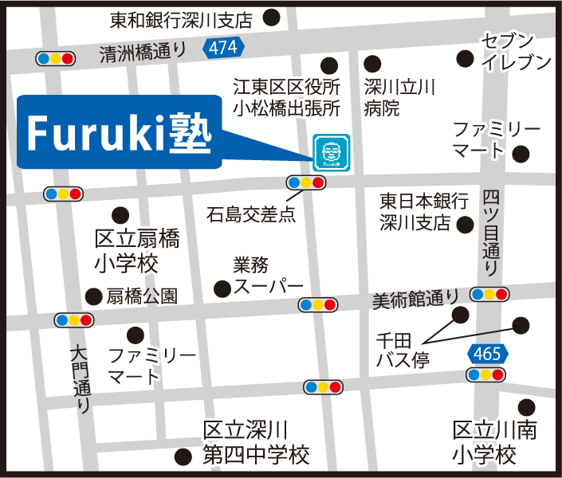

Furuki塾 ／ サポート内容・よくある質問
江東区千田 ／ 個別指導塾
こんなお子さんをサポートしています
🏠 不登校・行き渋りのお子さん
- 学校への足が遠のいている時期でも通塾できます
- 勉強の遅れを取り戻すペース配分を一緒に考えます
- 「体験だけ来てみる」から始められます
- 静かで人数が少ないので、集団が苦手でも安心です
🧩 発達の特性があるお子さん
- 診断あり・グレーゾーン（診断なし）、どちらも対応します
- 特性に合わせた指導ペース・方法を個別に調整します
- 認定心理士の塾長が特性を把握して関わります
- 「集団塾では続かなかった」方にも実績があります
相談から通塾までの流れ
1
お問い合わせ
（電話・LINE・Web）
（電話・LINE・Web）
→
2
塾長と
ご面談・相談
ご面談・相談
→
3
無料体験授業
（最大4回）
（最大4回）
→
4
ご入塾
（ご検討のみもOK）
（ご検討のみもOK）
よくある質問
Q
特性のことを詳しく説明できるか不安です。
A
うまく説明できなくて大丈夫です。「なんとなく困っている」でもお話しいただければ、塾長が一緒に整理します。
Q
診断書や資料は必要ですか？
A
不要です。診断の有無にかかわらず、お子さんの様子をお話しいただければ対応します。
Q
周りにバレたくない。個人情報は守られますか？
A
もちろんです。ご相談内容・個人情報は厳重に管理し、外部に漏れることは一切ありません。
Q
相談だけで入塾しなくても大丈夫ですか？
A
はい。「まず話を聞いてほしいだけ」で構いません。しつこい勧誘は一切行いません。
アクセス・お問い合わせ
Furuki塾 江東住吉教室
東京都江東区千田11-13
丸万マンダリンハイム1F
🚌 都営バス「千田」徒歩約2分
🚇 東西線 東陽町駅
🚇 半蔵門線・新宿線 住吉駅
📞 03-6770-6936
🕐 月〜金 15:00〜21:30
東京都江東区千田11-13
丸万マンダリンハイム1F
🚌 都営バス「千田」徒歩約2分
🚇 東西線 東陽町駅
🚇 半蔵門線・新宿線 住吉駅
📞 03-6770-6936
🕐 月〜金 15:00〜21:30

まずご相談ください
電話・LINE・Webフォーム、どこからでも。
入塾を決めていなくても大丈夫。しつこい勧誘は一切ありません。
入塾を決めていなくても大丈夫。しつこい勧誘は一切ありません。
📞 03-6770-6936
LINE
友達追加
友達追加
公式HP
詳細情報
詳細情報